Low-bit Quantization
Post-training and mixed-precision methods for LLMs, vision transformers, diffusion models, and production inference.
Efficient AI Researcher
Research Fellow at MMLab@NTU, S-Lab · Ph.D. at Xiamen University
I make large generative and vision models faster, smaller, and more practical. My work spans low-bit quantization, model compression, and efficient video generation. I always welcome research collaborations and academic exchanges. Please feel free to email me with any questions.
About
I am a Research Fellow at MMLab@NTU, S-Lab, working with Prof. Chen Change Loy. I received my Ph.D. in Intelligent Science and Technology from Xiamen University, advised by Prof. Rongrong Ji and Assoc. Prof. Xiawu Zheng.
Previously, I spent more than three years with ByteDance's quantization team, translating compression research into low-cost, low-latency inference for generative and foundation models.
Research
I study the algorithms and systems that remove unnecessary computation without sacrificing model capability.
Post-training and mixed-precision methods for LLMs, vision transformers, diffusion models, and production inference.
Temporal and flow-aware caching strategies that accelerate autoregressive generation while preserving visual quality.
Theory-guided pruning, outlier handling, and hardware-aware optimization for deployable neural networks.
Publications
* Equal contribution · † Corresponding author
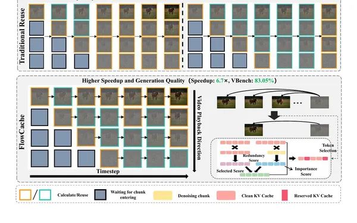
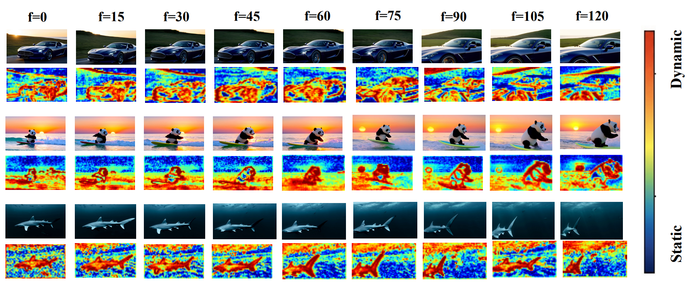
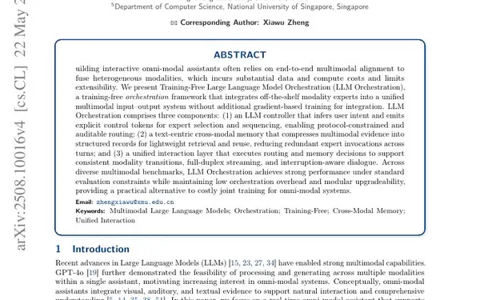
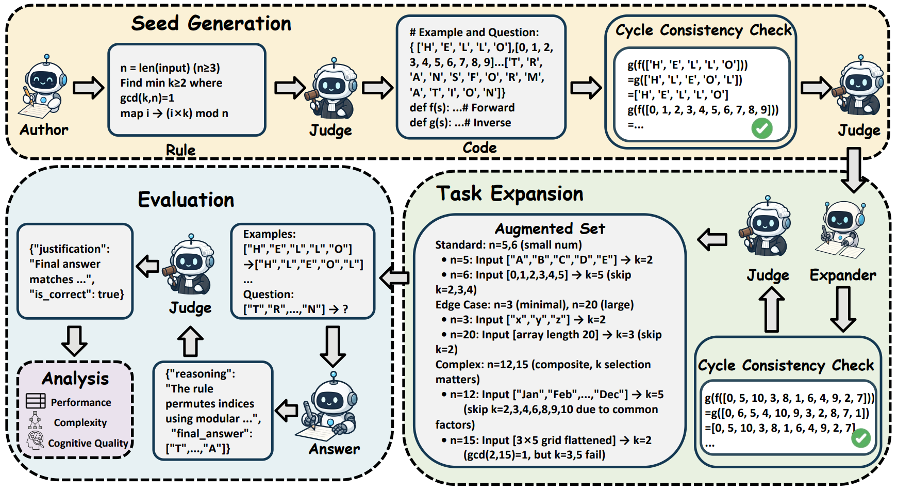
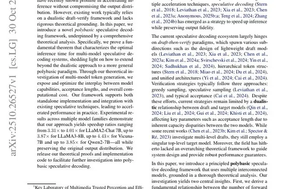
A theoretical framework generalizes draft-and-verify decoding to multiple interconnected draft models.
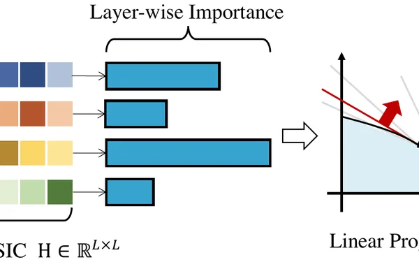
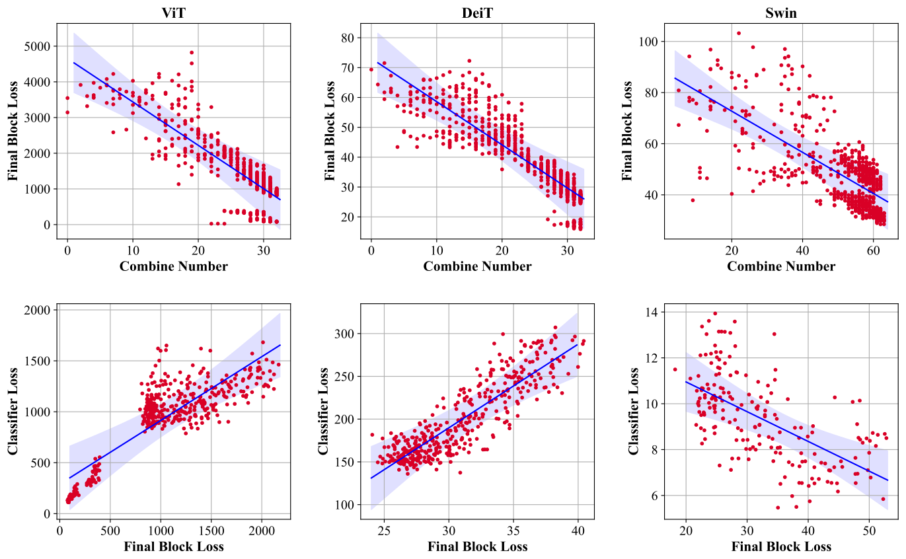
Outlier-aware channel slicing substantially improves accurate INT4 deployment of vision transformers.
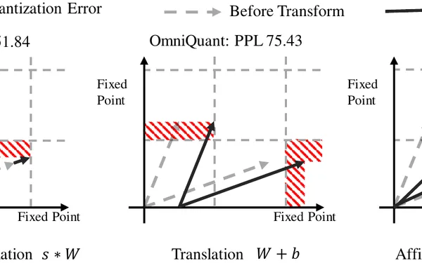
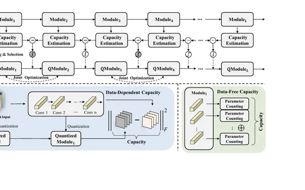
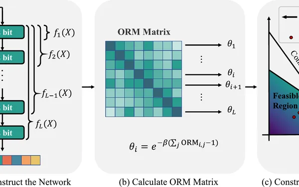
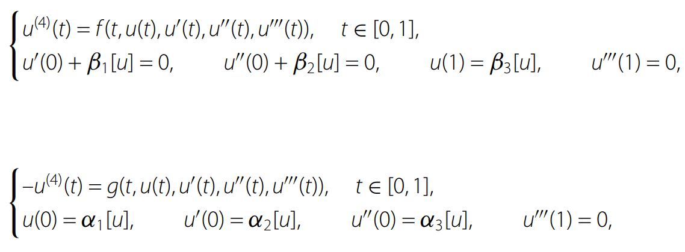
Existence results for positive solutions of fourth-order boundary value problems under Stieltjes conditions.
Experience & education
Research
MMLab@NTU · S-Lab
Working with Prof. Chen Change Loy
Industry
ByteDance Data · Beijing
Education
Xiamen University · Department of Artificial Intelligence
Advisors: Prof. Rongrong Ji and Assoc. Prof. Xiawu Zheng
Education
Xiamen University · Department of Computer Science
Education
Northeastern University · Shenyang
Academic service
Journal reviewer
Conference reviewer
Research · Collaboration · Ideas